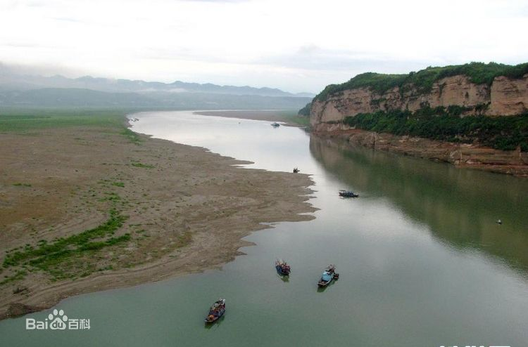
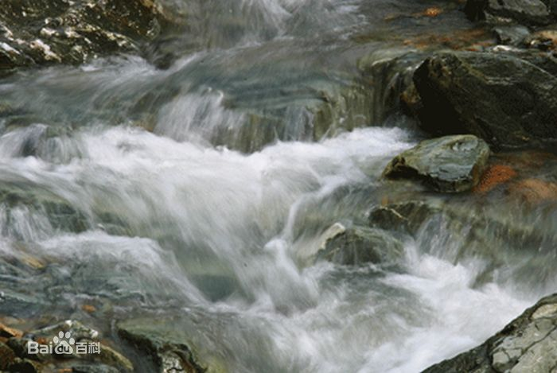
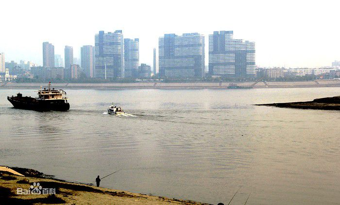
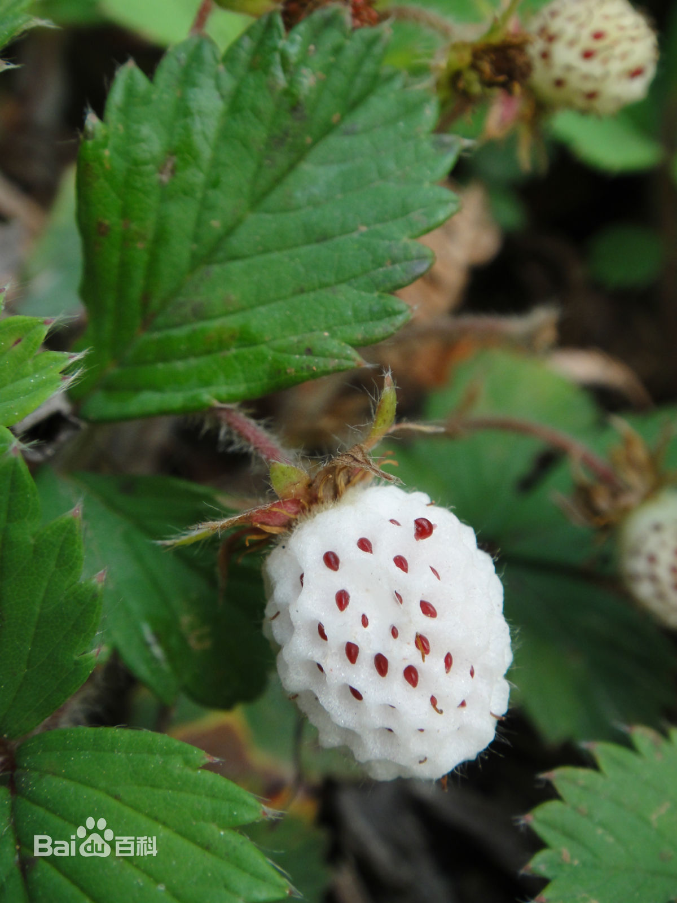
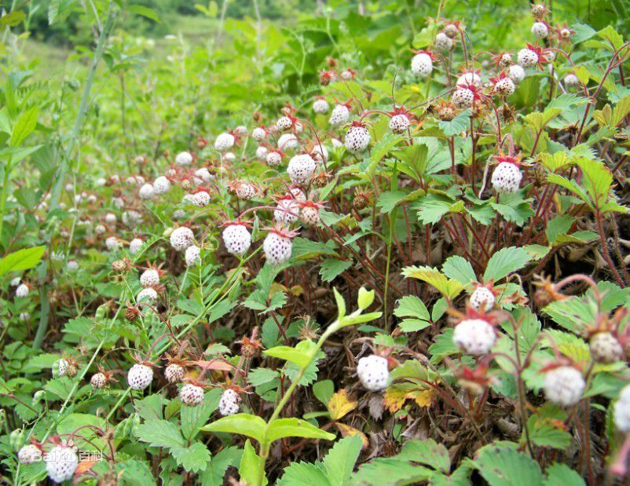
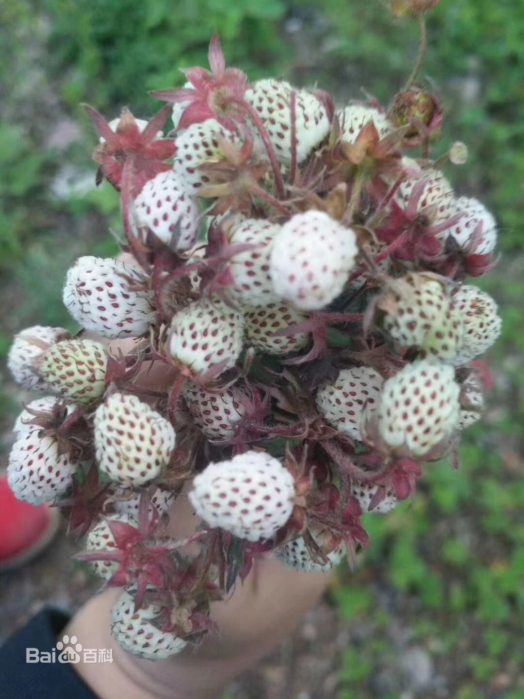

-
汉江 （长江最大支流）
汉江，又称汉水，汉江河，为长江最大的支流，现代水文认为有三源：中源漾水、北源沮水、南源玉带河，均在秦岭南麓陕西宁强县境内，流经沔县（现勉县）称沔水，东流至汉中始称汉水；自安康至丹江口段古称沧浪水，襄阳以下别名襄江、襄水。 汉江是长江最长的支流，在历史上占居重要地位，常与长江、淮河、黄河并列，合称“江淮河汉”。汉江多滩险峡谷、径流量大、水力资源丰富，航运条件好。
   -
瓢儿
瓢儿，草莓的一种，因其与草莓外观略微相似，又叫野草莓，但是瓢儿只有樱桃般大小，果体仅有人工栽培草莓的十分之一。瓢儿叶子呈绿色，茎株高约十五厘米左右，下有茎须小菀，生长地宜阴宜阳，瓢儿成熟时，漫山坡白茫茫一片，一般以白色果肉上点缀棕红色芝麻状小点居多。其味道以粉红色最佳，白中泛红，酸中带甜，甜中带酸。。
  